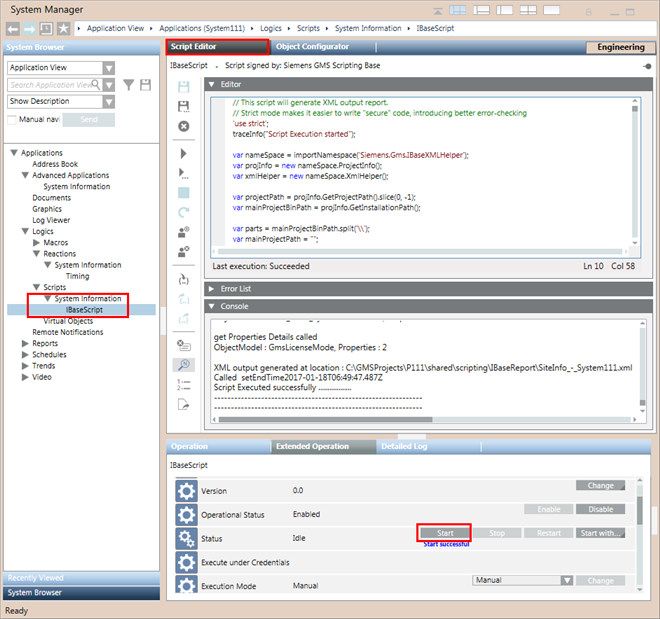

IBase Script in the Script Editor
The IBase script is selected under Applications > Logics > Scripts > System Information and its Status is Idle in the Extended Operation tab.
When working in Engineering mode, the Script Editor displays the IBase script that can be executed manually or automatically.
During IBase script execution, the IBase script traces information messages which can be viewed in the Console expander of the Script Editor. Similarly, the error messages, can be viewed in the Error List expander.
On successful execution, the IBase script generates the IBase report for the system.
